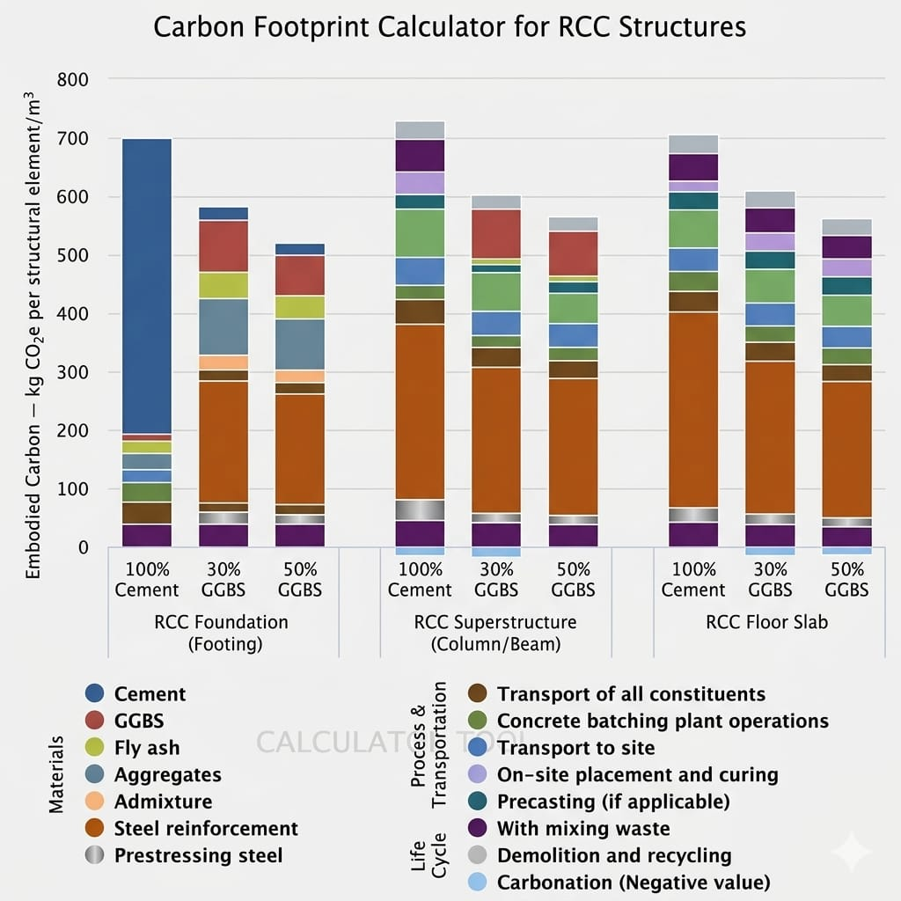

RCC Structures Embodied Carbon Footprint Calculator
Reinforced Cement Concrete (RCC) structures are fundamental to modern civil engineering, forming the core of buildings, bridges, foundations, and infrastructure systems. While RCC offers high strength, durability, and versatility, it is also a significant contributor to embodied carbon emissions due to the combined use of concrete and steel reinforcement.
Embodied carbon refers to the total greenhouse gas emissions associated with the lifecycle of construction materials, including extraction, manufacturing, transportation, and placement. In RCC structures, cement production and steel manufacturing are the primary sources of these emissions, making it essential to evaluate and optimize their usage.
About the Calculator
The RCC Structures Embodied Carbon Footprint Calculator is a tool developed to estimate the carbon emissions associated with various RCC structural elements.
Unlike conventional tools that focus only on concrete, this calculator incorporates both concrete materials and steel reinforcement to provide a more accurate and comprehensive assessment.
The calculator works by analyzing material quantities per cubic meter of RCC and applying standard emission factors to estimate total embodied carbon.
Key Features
- -Academic embodied carbon for RCC elements such as beams, slabs, columns, and footings.
- -Academic both concrete and reinforcement steel contributions
- -Allows comparison of multiple design alternatives
- -Provides quick and reliable carbon estimation results
- -User-friendly interface suitable for students, engineers, and researchers
Methodology
The calculator is based on widely accepted emission factors obtained from standard environmental and construction databases. It considers emissions from:
- -Cement production
- -Supplementary cementitious materials (such as GGBS and Fly Ash)
- -Aggregates and water
- -Steel reinforcement manufacturing
- -Transportation of materials to the construction site
The system boundary is defined as cradle-to-site, meaning it includes all processes from raw material extraction up to delivery at the construction site.
Components Considered in RCC
The following materials are included in the calculation:
- -Cement (Ordinary Portland Cement or blended cement)
- -Supplementary materials (GGBS, Fly Ash)
- -Fine and coarse aggregates
- -Water
- -Chemical admixtures
- -Reinforcement steel (bars, meshes, etc.)
Carbon Reduction Strategies in RCC Structures
To reduce embodied carbon in RCC construction, the following approaches can be adopted:
- -Partial replacement of cement with GGBS or Fly Ash
- -Efficient structural design to minimize material usage
- -Use of high-strength steel to reduce reinforcement quantity
- -Adoption of recycled aggregates
- -Local sourcing of materials to reduce transportation emissions
- -Optimization of mix design for performance and sustainability

Applications
- -Sustainable building design and planning
- -Infrastructure project evaluation
- -Academic research and student analysis
- -Life Cycle Assessment (LCA) studies
- -Comparison of conventional and low-carbon RCC designs
Usage Instructions
- -Select the type of RCC structural element (beam, slab, column, or footing)
- -Enter material quantities per cubic meter (cement, aggregates, steel, etc.)
- -Click on the “Calculate” button
- -View the total embodied carbon results
- -Compare results for different design options
Additional Notes
- -For more accurate results, use actual project data such as concrete mix design and Bar Bending Schedule (BBS).
- -The accuracy of the output depends on the correctness of input values and selected emission factors.